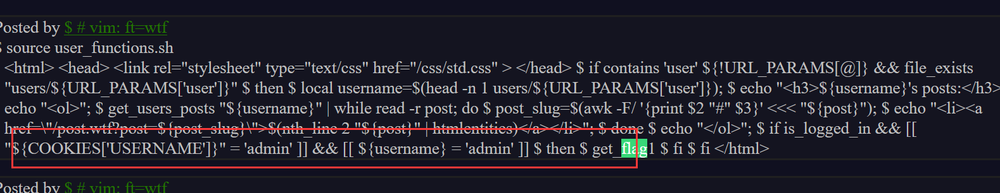

题目描述
无
题目解题
访问首页后如下图
发现找不出什么信息，于是dirsearch扫了也没什么发现，只有个url/css，访问之后似乎没有效果

之后看到首页有登录，注册功能，尝试一下弱口令先
测试了几个没有成功，不过确定的是存在管理员账户admin，那肯定是要找到其密码登录的（这里我也尝试了爆破，无果）。那我们只能注册看看了

注册之后随便点了几个链接，发现url参数一直在变，那这里肯定是有东西的（但我不知道如何搞。。）之后我对比了两次抓包登录框的信息
发现这里是有cookie存在的，那猜测应该是构造admin的cookie

这里没思路后看了两眼wp说是目录穿越。。。┭┮﹏┭┮太菜了根本不往这里想，那我们先尝试一下
这里真尴尬，我目录穿多了，页面一直刷新不过来，看了wp发现尝试一个就可以了，看来以后测试的时候我也应该从一个开始，不然就忽略某些信息了

这里向下翻发现源码

这里虽然发现可疑处，但我不知如何利用，只得在看一眼wp0.o
大佬们说的是从这些源码中可以分析出这个admin账户应该是可以使用cookie登录的。
并且源码中有一些敏感信息，比如users
于是他们便开始这样操作：使用目录穿越查看users信息

可以看到出现疑似md5字符串以及base64编码的字符串，这里我找了一下我注册的user信息
发现下面一行与我cookie的token所对应，那我猜测上面的md5或许是如下图所示的加密结果
随后尝试md5解密，没想到竟然可以解出来
发现是16进制字符串，那我们再解密一下
如图发现与我创建的账号密码是相同的，那我们直接去解密一下admin的信息看看，但可恶的是我解密不出来┭┮﹏┭┮，不过看了wp我才发现我有多蠢。记得登录的时候只需要用户名和token就行了。。。。。真尴尬啊

我们直接改一手username和token，不过失败了，在看wp发现是方法有问题。我们先正确操作一下
直接访问首页，抓包首页即可，不要在登录时抓包，如下图所示，之后添加admin的cookie即可
添加之后直接放包就可以看到我们成功以admin身份登录

我猜测这里不在登录时抓包的原因是，服务器会检查你登录时的账号密码，他并不以检查cookie为主，如果你账号密码不对，即使cookie是admin的也无法正确登录。而直接在首页抓包添加cookie就避开了对账号密码的检测。–这也提供了一些奇怪的姿势
之后wp说：之后点击上图中的Profile，继续抓包，用admin账号查看相关的内容，如果不抓包添加cookie，就查看不到前半段flag。
这里我就恍然了，我们看下图
这里说如果cookie的username什么什么的等于admin才可以得到flag。

不过这里抓包后仍然需要添加cookie才能行，这里就是思路的沿用，因为上述也是只凭借cookie去登录，但登陆之后你会发现系统还是提示你：你不是admin身份。故此我们在进行操作就应该添加代表admin的cookie才能躲过检测吧。。。
这里添加了cookie一直放包，然后看到页面回显了一部分flag：Flag: xctf{cb49256d1ab48803
这里也就对应了上述的源码了。之后就是我看不懂的操作了，只能含泪看wp-.-
这里便是有趣的代码审计了┭┮﹏┭┮。
这里找到这行代码的思路是，题目一直提示我们WTF这个关键词，因此wp就搜索WTF找到了如下代码
wtf文件其实是用户自己定义的一种文件格式，他的处理其实每一行进行php代码逻辑的处理，由于调用了eval思路一下子就清晰了，对.wtf每一行都进行了eval操作，结合注释我们可以看到，每一行必须以$开头
max_page_include_depth=64 #用于限制包含的深度，最大为64。
page_include_depth=0 #跟踪当前包含的深度，初始化为0。
function include_page {
# include_page pathname
local pathname=$1 #用于存储传递给函数的文件路径。
local cmd= #用于构建要执行的Shell命令。
[[ ${pathname(-4)} = '.wtf' ]];#判断文件的扩展名是否为 ".wtf"如果是，会将 can_execute 设置为 1，表示可以执行命令。
local can_execute=$; #用于标记是否可以执行命令。
page_include_depth=$(($page_include_depth+1))
if [[ $page_include_depth -lt $max_page_include_depth ]]
#如果 page_include_depth 小于 max_page_include_depth，则进入条件分支，表示可以继续包含文件。
then
local line;
while read -r line; do #逐行读取被包含的文件
# check if we're in a script line or not ($ at the beginning implies script line)
# also, our extension needs to be .wtf
#对于每一行，首先检查是否包含脚本。如果 $ 符号出现在行的开头并且 can_execute 为0，则表示当前行是脚本。
[[ $ = ${line01} && ${can_execute} = 0 ]];
is_script=$; #用于标记当前行是否包含脚本。
# execute the line.
#如果当前行不是脚本（$is_script 为0），则将该行添加到 cmd 变量中，以便构建要执行的命令。
if [[ $is_script = 0 ]]
then
cmd+=$'n'${line#$};
else
#如果当前行是脚本，那么检查 cmd 是否包含内容，如果包含，则执行 cmd 中的命令，并记录错误日志。
if [[ -n $cmd ]]
then
eval $cmd log Error during execution of ${cmd};
cmd=
fi
#如果当前行不是脚本，直接输出该行内容。
echo $line
fi
done ${pathname}
else
echo pMax include depth exceeded!p
fi
}由于代码审计太菜了，就跟着GPT学习吧。。。
下面是一些符号的解释
1. 在这段代码中，-lt 是一个比较运算符，用于比较两个数值，它代表 "less than"（小于）的意思。具体来说，-lt 用于比较左边的数值是否小于右边的数值。
2. -n 是一个条件测试，在这里的上下文中，它用于检查一个变量 $cmd 是否包含非空值。具体地说，-n 用于判断一个字符串是否为空。
3. 在这行代码中，$1 表示函数 include_page 的第一个参数，也就是在调用该函数时传递给它的第一个值。在Shell脚本中，函数可以接受多个参数，这些参数可以通过$1、$2、$3 等来访问，分别代表第一个、第二个、第三个参数，依此类推。能够解析并执行wtf文件，如果还能够上传wtf文件并执行的话，就可以达到控制服务器的目的。
function reply {
local post_id=$1;
local username=$2;
local text=$3;
local hashed=$(hash_username "${username}");
#遍历名为 posts/${post_id}/ 的目录中的所有文件和子目录。使用 basename 命令提取每个文件和子目录的名称。
#对这些名称进行数值排序（sort -n）。从排序后的列表中选择最后一个（tail -n 1），这将是当前最后一个回复的ID。
curr_id=$(for d in posts/${post_id}/*; do basename $d; done | sort -n | tail -n 1);
#计算下一个回复的ID（next_reply_id），它是当前最后一个回复的ID加1。
next_reply_id=$(awk '{print $1+1}' <<< "${curr_id}");
#创建一个新的回复文件的路径（next_file），该路径由 posts/${post_id}/${next_reply_id} 构成。
next_file=(posts/${post_id}/${next_reply_id});
#在新的回复文件中写入以下内容：
#回复的用户名（${username}）,回复的主题（通过调用 nth_line 2 从第一个回复文件中获取）,回复的文本内容（${text}）
echo "${username}" > "${next_file}";
echo "RE: $(nth_line 2 <; "posts/${post_id}/1")" >> "${next_file}";
echo "${text}" >> "${next_file}";
# add post this is in reply to to posts cache
#最后，将新回复的信息添加到回复用户的帖子缓存中，这是通过将信息追加到 users_lookup/${hashed}/posts 文件来实现的。这将允许用户轻松查找他们所回复的帖子。
echo "${post_id}/${next_reply_id}" >> "users_lookup/${hashed}/posts";
}这是评论功能的后台代码，这部分也是存在路径穿越的。
这行代码把用户名写在了评论文件的内容中：
echo "${username}" > "${next_file}";通过上面的分析：如果用户名是一段可执行代码，而且写入的文件是 wtf 格式的，那么这个文件就能够执行我们想要的代码。 （而且wtf.sh只运行文件扩展名为.wtf的脚本和前缀为’$'的行）
我们可以利用的是text和username，然后用户名和text最后会被保存到posts/${post_id}/${next_reply_id}路径下
如果我们能够手动构造路径，使得最后文件路径后缀是.wtf的话，他就会解析为.wtf文件，执行eval函数，那么照着这个思路，开始利用
单看这段代码，username和text好像都能利用，但是text不执行系统命令，只输出文本，可能在其他地方做了过滤，那么只能利用username
先看看username在哪，构造用户名${find,/,-iname,get_flag2}//空格被过滤了，{,}是bash绕过空格过滤的方法之一
$/usr/bin/get_flag2得到flag
先普通地评论一下，知晓评论发送的数据包的结构，在普通评论的基础上，进行路径穿越
修改路径去上传

上传后门sh.wtf，wtf后面要加%09,表示制表符,否在会被当做目录去解析，不过这里直接…/hm.wtf%09也可，这里是wp添加了一个url大概是为了方便吧
如图这里应该就是成功上传了
然后我们去注册用户，用户名就是我们查找get_flag2的命令，以这个用户名去评论然后上传到之前后门的路径。
第一条首先查找get_flag2${find,/,-iname,get_flag2}
这里前面加个$是wtf文件执行命令的写法
注册成功后去评论功能抓包


之后访问路径看看

成功执行，得到flag2的路径，之后继续凭此路径当做用户名去注册，并上传至ht.wtf后门
$/usr/bin/get_flag2


拿到flag
xctf{cb49256d1ab48803149e5ec49d3c29ca}